秋を楽しむ [梅吉]
なかなか爽やかな秋晴れが続かない今秋ですが
気持ちの良いお天気の日には思いっきりお外を楽しむ梅吉さん＾＾
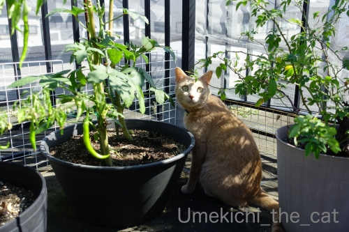
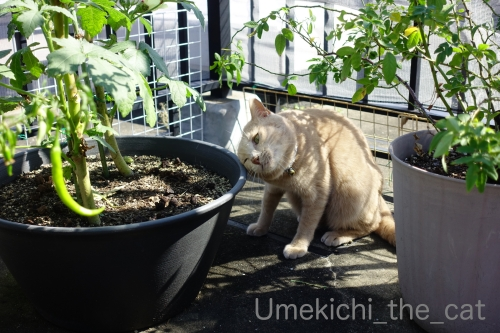
お外の醍醐味！
それは植木鉢に頭を擦り付けることー！
・・・・・なのでしょうかwww
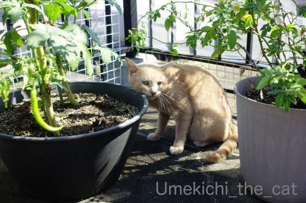
ほっぺも忘れてはいません。
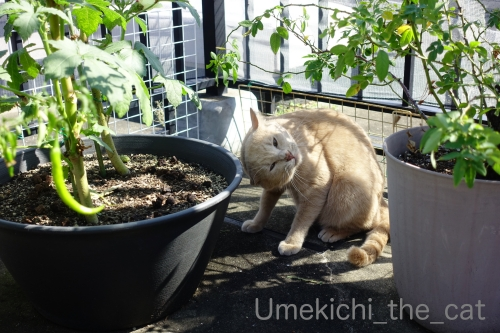
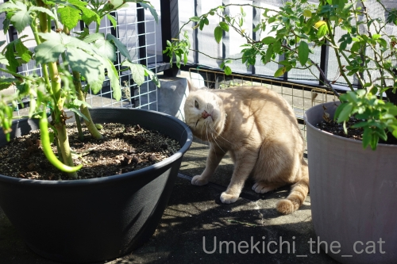
気持ち良いですか？
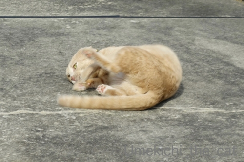
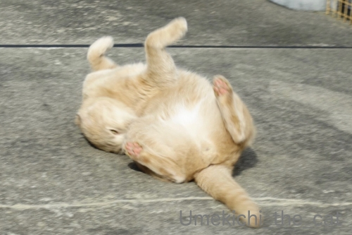
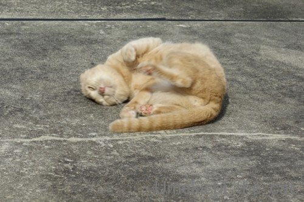
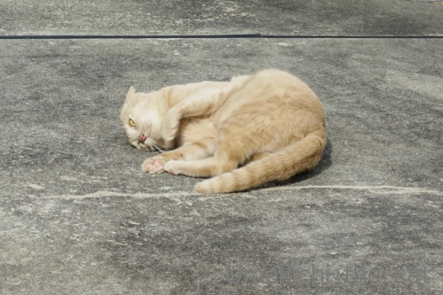
「ねこ舞踏 秋に寄せる喜びの舞」( ´艸｀)
朝晩はひんやり感じられるようになってきましたね。
我が家ではお膝ねこ、お布団ねこが観測されております。
この時期は寝具選びに迷います。
我が家はまだ夏の寝具（ガーセケットに夏用の肌かけ布団の組み合わせ）なんですが
もう羽毛布団を使っていらっしゃるなんてお話もちらほら・・・
羽毛布団、圧縮してしまってあるからお天気の良い日に天日干しして
復活させておかなくちゃ！
 ↑ガブッと一押し↑
↑ガブッと一押し↑
ラグビーW杯、13日のスコットランド戦が迫ってきました。
迫り来る猛烈な勢力の台風情報に気が気じゃない方も多いと思います（←私が一番ねw）
もちろんラグビーだけではなく前回台風で被害を受けた地域の影響も含めて。
W杯では予選プールの試合は順延はなく中止となります。
中止の場合のスコアは引き分け扱い。
引き分けの場合は日本が決勝トーナメントに進める可能性が極めて高いのですが・・・
（9日のスコットラントvロシアの結果の兼ね合いとか13日の試合結果で
色々な条件がつくので断言は避けますね。）
でも！13日の試合が中止なんてことになれば世界の中での日本のラグビーの位置付けに
一つもメリットなんてないと思うのです。
たとえベスト８になったとしても。
なので勝ち負けの問題ではなくどうしても試合をして欲しい！！
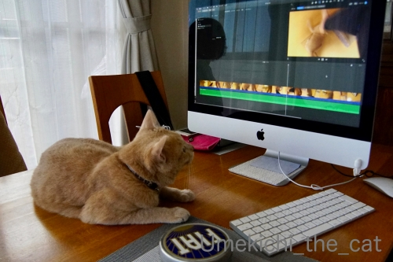
梅吉さんもそう思うよね？
自分の動画は真剣に見る漢(*>艸<)
どうしてそんなに試合することが重要かって・・・
以下反転して読めます。興味のある方のみどうぞーm(_ _)m
（以下の文章は語弊に満ちてますがわかりやすくするために敢えてそうしてます。
また長文化を避けるため細部は端折ってます。）
日本のラグビーは世界の中で軽く見られていると思います。
スーパーラグビー（←リンク貼ってます）という国際リーグ戦があるのですが
日本は2016年にやっと加入させてもらえました。
が、2021年からはもう参加しなくていいからって除外されてしまった。
W杯終わったらもういいでしょ？って感じでしょうか。
今回のW杯はアジア初。
開催地が日本って決まった時は「日本なんかでするの？観客くるの？？」
とういうのが世界の正直な思いだったかと。
そんな状況の中で開催された大会にW杯史上初の「試合中止」なんて事態になれば
天候のせいとはいえ「ほーら日本なんかでやるから」ってなりそうな気がして。
汗と湿度のせいでボールが滑りやすいことも各国から『いかがなものか』という
意見もちらほら出ているようですし・・・
大会自体は盛り上がっておもてなしも評判が良くても
日本はラグビーに適していない国と思われるのが私はとても悔しいのです。
以上の理由から今大会は試合の中止なんてことにならずに済むことを切に願っております。
お天気相手のことなのでどうしようもないことではあるのですが・・・
以上、私の個人的な勝手な意見です。
聞き苦しかったらごめんなさいね・・・
気持ちの良いお天気の日には思いっきりお外を楽しむ梅吉さん＾＾
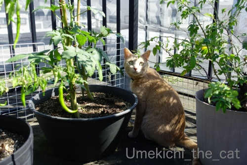
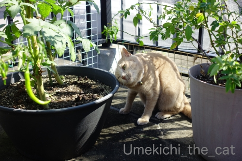
お外の醍醐味！
それは植木鉢に頭を擦り付けることー！
・・・・・なのでしょうかwww
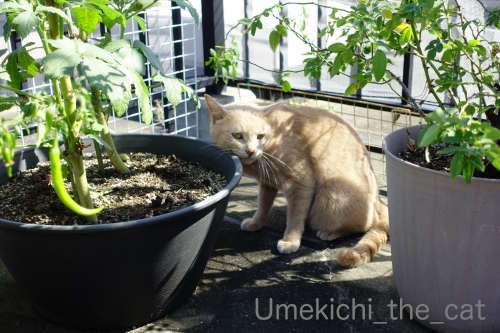
ほっぺも忘れてはいません。
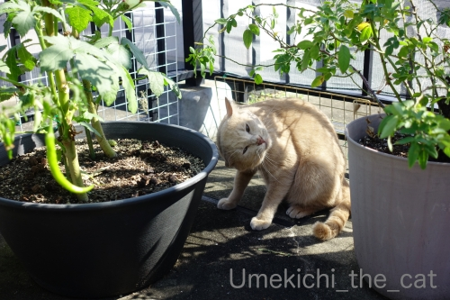
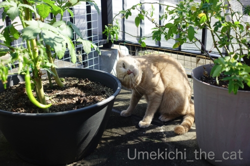
気持ち良いですか？
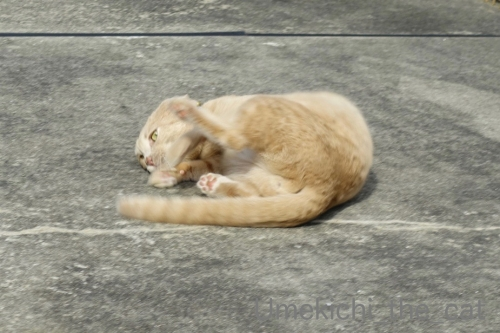
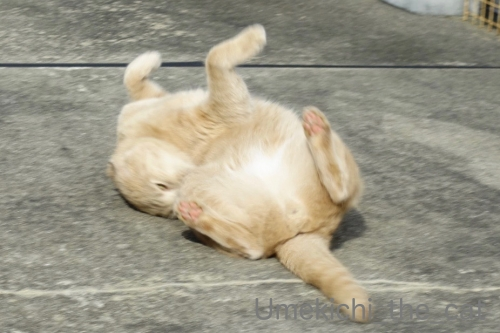
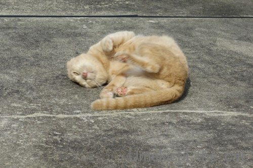
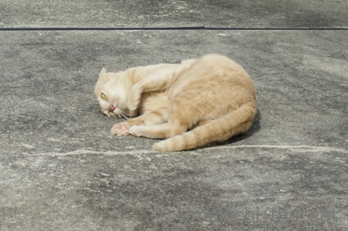
「ねこ舞踏 秋に寄せる喜びの舞」( ´艸｀)
朝晩はひんやり感じられるようになってきましたね。
我が家ではお膝ねこ、お布団ねこが観測されております。
この時期は寝具選びに迷います。
我が家はまだ夏の寝具（ガーセケットに夏用の肌かけ布団の組み合わせ）なんですが
もう羽毛布団を使っていらっしゃるなんてお話もちらほら・・・
羽毛布団、圧縮してしまってあるからお天気の良い日に天日干しして
復活させておかなくちゃ！
ラグビーW杯、13日のスコットランド戦が迫ってきました。
迫り来る猛烈な勢力の台風情報に気が気じゃない方も多いと思います（←私が一番ねw）
もちろんラグビーだけではなく前回台風で被害を受けた地域の影響も含めて。
W杯では予選プールの試合は順延はなく中止となります。
中止の場合のスコアは引き分け扱い。
引き分けの場合は日本が決勝トーナメントに進める可能性が極めて高いのですが・・・
（9日のスコットラントvロシアの結果の兼ね合いとか13日の試合結果で
色々な条件がつくので断言は避けますね。）
でも！13日の試合が中止なんてことになれば世界の中での日本のラグビーの位置付けに
一つもメリットなんてないと思うのです。
たとえベスト８になったとしても。
なので勝ち負けの問題ではなくどうしても試合をして欲しい！！
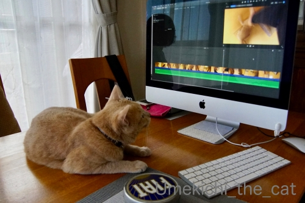
梅吉さんもそう思うよね？
自分の動画は真剣に見る漢(*>艸<)
どうしてそんなに試合することが重要かって・・・
以下反転して読めます。興味のある方のみどうぞーm(_ _)m
（以下の文章は語弊に満ちてますがわかりやすくするために敢えてそうしてます。
また長文化を避けるため細部は端折ってます。）
日本のラグビーは世界の中で軽く見られていると思います。
スーパーラグビー（←リンク貼ってます）という国際リーグ戦があるのですが
日本は2016年にやっと加入させてもらえました。
が、2021年からはもう参加しなくていいからって除外されてしまった。
W杯終わったらもういいでしょ？って感じでしょうか。
今回のW杯はアジア初。
開催地が日本って決まった時は「日本なんかでするの？観客くるの？？」
とういうのが世界の正直な思いだったかと。
そんな状況の中で開催された大会にW杯史上初の「試合中止」なんて事態になれば
天候のせいとはいえ「ほーら日本なんかでやるから」ってなりそうな気がして。
汗と湿度のせいでボールが滑りやすいことも各国から『いかがなものか』という
意見もちらほら出ているようですし・・・
大会自体は盛り上がっておもてなしも評判が良くても
日本はラグビーに適していない国と思われるのが私はとても悔しいのです。
以上の理由から今大会は試合の中止なんてことにならずに済むことを切に願っております。
お天気相手のことなのでどうしようもないことではあるのですが・・・
以上、私の個人的な勝手な意見です。
聞き苦しかったらごめんなさいね・・・

カフェオレ色の梅吉

梅吉 2023年8月10日 永眠


梅吉と出会った譲渡会

犬猫の理由なき殺処分ゼロ
妄想広告
UMEKICHI 光

爆発的に早い！
時々攻撃的！
Thanks to Mr.Boss365
爆発的に早い！
時々攻撃的！
Thanks to Mr.Boss365

頭が痒いのは頭を良く使ってるからかな？（ﾟ□ﾟ）
まぁ、台風は避けようがないからどうしようもないと思いますが（ﾟ□ﾟ）
来年のオリンピックだって、もし開催中に台風が来たらどうなるのでしょう？
by 英ちゃん (2019-10-10 00:21)
梅吉さんゴロンゴロンしながらお耳がなくなっちゃってるよ~。
ラグビーは試合会場を変えるとか色々考えてるみたいだけど台風は仕方ないです。どうするのかな。
by zombiekong (2019-10-10 00:44)
コンクリートの上でゴロンゴロンは
うちの子達も大好きです＾＾
by ぽちの輔 (2019-10-10 05:48)
実家のミイちゃんもおんもにでるとコンクリートのところでコロンコロンしまーす。気持ちいいのかな。
ラグビーは、強くなってきて、日本の地位も少しは上がってきてるのかなと思ってたけど、まぁ、まだまだ、なんですかねぇ。。。
by ChatBleu (2019-10-10 06:44)
梅吉さんのピンクの肉球発見！かわいいにゃあ。
by ニコニコファイト (2019-10-10 07:08)
梅吉さん、外でくつろいでいますね！
鉢でゴリゴリですね。
by ma2ma2 (2019-10-10 09:12)
こんにちは。
木漏れ日の中で、梅吉くんのスネスネがいい感じです。
また、広いバルコニー良いですね。ニャンズには最高の場所と推測です。
ところで、大きなお世話ですが、防水加工したいですね？（笑）
羽毛布団はまだですが、月末には必要な感じです。
１３日、雨風の中で試合して欲しいですね。
勝ち負けよりも小生は「感動の試合」を見たいです。
当然、日本代表が勝てるチャンスは大いにあります。
梅吉くん、動画編集に携わって？注文・指摘？ダメ出しを出している感じ？（笑）
ラグビーは伝統もありますが、古典的な考え方・弊害もあります。
スーパーラグビーの除外、根底には「ティア１」の差別有りです。
この概念を崩すには、結果・実績を残す事が必要ですね。
正直、サンウルブスは存在感をアピール出来なかった。
スコットランドは強豪ですが・・・
最後まで諦めなければ、日本が勝ちます。想像以上に日本は強い！？(=^･ｪ･^=)
by Boss365 (2019-10-10 10:37)
日当たりのよい広いバルコニー、ニャンコにとってはパラダイスですね♪
梅吉さん、ゴロンゴロン喜びの舞いですね！
ウチのも家じゅうの角という角にほっぺたをゴリゴリ擦りつけます。
マーキングの意味があると聞いたのですが、ぜんぶ自分の縄張りなのに必死でにおい付ける必要もなかろうに・・と思いながら変顔になるので楽しんでます^^
我が家まだタオルケットのまま、こてつも膝には寄り付かず・・全員暑がりなのかな？( ;∀;)
ラグビー、台風での試合中止は避けたいですね！
無観客でもいいから西の方かドームへ会場変更できればいいのにな～選手の宿泊とか練習場所とかハードルは高そうですが・・・。
勝ってスッキリ決勝へ行きたいですね(#^^#)
by ゆきち (2019-10-10 12:18)
お外が気持ち良い季節♪
今の季節が長いといいですねぇ～
すぐに寒くならないことを願います！
自分の動画をガン見（笑
映りをチェックですかね(#^.^#)
by きぃ (2019-10-10 12:41)
ベランダが広くて、いろんなものが育っていて
梅ちゃんにとっては楽しい場所なのでしょうね♪
ゴロンゴロンしているところ、猫らしくていいっ(笑)
気持ちいいのでしょうね(*´艸｀*)
私は羽毛布団で、暑くなると蹴っ飛ばして温度調整
しておりますｗｗ
ラグビー、週末関東で試合するのはムリっぽいので
いっそ西でやりませんかー！？と言いたいですね。
勝ち負けじゃなくて試合してほしいというのは
ホンモノのファンである証拠ですね(*＾-ﾟ)v
by カトリーヌ (2019-10-10 15:02)
ごろんごろんしてるのもかわいいわあ。
日本のラグビー、正直私も軽く見てました。
でも国内外の見方は変わりつつあるのでは？と期待します。
場所を移動するとか、なんとか開催できるといいですね！
by liang (2019-10-10 16:08)
梅吉さん、外遊びを満喫して気持ちよさそうですね。体を擦る付ける行為は、猫さんよく見られますがマーキングなのでしょうか？不思議ですよね。
悪いタイミングで台風が来ましたが、最近の自然災害は甚大な被害が多いですから心配です。
試合も、仕方がない処置ではあると思います。でも何か解決策がなかったのかと残念にも思います。
by kou (2019-10-10 18:13)
梅吉さん、自分のテリトリー宣言ですか( ^ω^ )
大丈夫！お父さんにちぃさんそしてベランダ含め
全てのものが梅吉さんのものです♪( ´▽｀)
ニャンコの舞、爽やかに晴れた涼しい秋に感謝の舞かな=(^.^)=
寝具、うちのかみさんは未だに夏用のガーゼ肌掛けです＾＾
やっとエアコンつけなくても寝られるようになったけど
お猫様が寄り添って寝てくれるからまだまだ夏用で十分だそうですw
by ニッキー (2019-10-10 19:56)
喜びの舞の梅吉さん、気持良さそうですね。
時間にもよりますが、今の時期コンクリートが温かくて気持ちいいのか、ヒンヤリして気持ちいいのか・・・、やっぱり温かいからなのかな？
最近「スコットランド」の文字が「スットコランド」に見えるのは、zombiekongさんのブログをみているからかな。^^;
by yes_hama (2019-10-10 21:38)
梅吉さんがシシトウをかじるのかと思いました。
期待しすぎですか＾＾；
by riverwalk (2019-10-10 22:57)
お膝猫、憧れます～
寒い時に乗ってきてくれたら良いなぁ
by 藤並 香衣 (2019-10-10 23:12)
植木鉢の淵が気持ちいいのちょっと分かる気がします♪
素焼きな感じがちょっといい肌触りなんですよね～
ちぃさんの日本ラグビー愛はひしひしと感じましたよ(^_-)-☆
by yamatonosuke (2019-10-11 01:01)
梅吉さんのベランダの鉢植えとコンクリート地面への熱い思いと
ちぃさんの日本のラグビーをもっとグローバルスタンダード化にしたい熱い思いは同時にがっつり伝わってきまいたよ(^^
台風の進路的にはどっか～ん直撃みたいですが13日は台風一過になりそうでもあるし、余波が残っていそうでもあるし、微妙なところですね。
スポーツに適した気候・・・それを言うならオリンピックもだろう~がぁぁぁ
と思うのですがそのあたりは何も言わないのかしら？と世界を相手に思いましたとさ。
by marimo (2019-10-11 11:11)
余談ではありますが11日の11：11
1がいっぱい並んで縁起がいいので追伸でしたｗ
きっといいことありまっせ♪
by marimo (2019-10-11 11:13)
ベランダでごろんごろん！気持ちいいんだろうな～♪
私も猫だったら、喜びの舞を披露すると思います(≧▽≦)
お膝ねこ。お布団ねこの観測は嬉しいニュースです。
台風を吹き飛ばしてほしいです。
by emi (2019-10-11 17:20)
梅吉さん、植木鉢のすり心地って…
いいのでしょうか？
ラグビーは13日午後だったらやる分には
なんとか大丈夫そうですね。
観客はいけない人が増えそうですが^^;
by ふにゃいの (2019-10-11 22:20)
梅吉さん、丁寧なスリスリと喜びの舞、
秋の空気の中気持ちよさそうですね（笑）
我が家はダウンケットを使用しています。
薄ーくダウンが入っているものです。
合物ダウン、真冬のダウンと一人の枚数が多かったので、女性軍は春に合物ダウンを処分しました（笑）
by kiki (2019-10-11 23:51)
秋に寄せる喜びの舞♪ 気持ちよさそうですにゃあ(^.^)
公園だと、これが草っぱらなので、より気持ちよさそうですよ♪
外で暮らす猫を、すごく可哀想･･･みたいに捉える人も多いですが、
ぼへの公園の子たちを見ていると、どっちかというと、
家の中にしか居られない、ウチの子たちのほうが可哀想にも思えます(^_^;
by のらん (2019-10-12 11:07)
＞ラグビーW杯、13日のスコットランド戦が迫ってきました。
スットコランドに見えてしまうのは、もうzombiekongさんに洗脳されてるでしょうか(笑)
梅吉くん、ぐりぐりゴロゴロ気持ちよさそう^^
先代猫は前に住んでいた家のベランダで同じようにゴロゴロしてたので、こういう写真は懐かしいなーー^^
by リュカ (2019-10-12 22:45)
こんにちは。別件ですが・・・
画像の件、了解しました。是非とも自由にお使い下さい。
明日の「梅しごとー梅吉日記ー」が楽しみです（笑）
フォワードすももの「愛と希望」のコメントに感謝です。
すももが、今晩スコットランドをボコります（笑）！？(=^･ｪ･^=)
by Boss365 (2019-10-13 14:52)